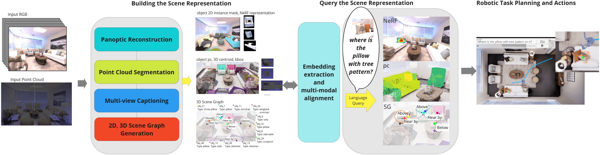

Overview
Abstract
Robots need scene representations that combine accurate geometry with semantics people can express in natural language. We introduce 3D Queryable Scene Representation (3D QSR), an object-centric framework that unifies 3D-consistent novel-view rendering and panoptic segmentation, precise point-cloud geometry, and structured 3D scene graphs. By linking multimodal object embeddings with large vision-language models, 3D QSR supports object-level retrieval of visual, semantic, and geometric information. Retrieved scene information can then guide robotic task planning. We evaluate the framework in Unity using the Replica dataset and in a digital duplicate of a real wet lab for emergency-response planning.
How it works
Method
The framework builds complementary NeRF-based scene reconstructions, point clouds, and scene graphs from RGB video and optional point-cloud data. Multi-view captions enrich scene objects with attributes and functions; vision-language embeddings make those objects searchable from natural-language queries. The retrieved objects, spatial properties, and relationships are passed to a task planner for navigation and object-retrieval actions.

See the system in action
Experiments
Object retrieval is evaluated across point-cloud, NeRF, and scene-graph representations on six Replica scenes. The demonstrations also show natural-language scene queries, Unity-based robot navigation, emergency-response planning in a wet-lab digital duplicate, and exploratory LLM-assisted scene consolidation.
Demo 02 · Emergency Response in Lab
Demo 03 · Find Book And Reading Spot
Demo 04 · Something That Needs Watering
Demo 05 · Somewhere To Sit Other Than Chair
Demo 06 · Somewhere To Take A Call
For citation
BibTeX
@inproceedings{li2025queryable,
title = {Queryable 3D Scene Representation: A Multi-Modal Framework for Semantic Reasoning and Robotic Task Planning},
author = {Li, Xun and Santa Cruz, Rodrigo and Xi, Mingze and Zhang, Hu and Perera, Madhawa and Wang, Ziwei and Ravendran, Ahalya and Matthews, Brandon J. and Xu, Feng and Adcock, Matt and Wang, Dadong and Liu, Jiajun},
booktitle = {Proceedings of the 33rd ACM International Conference on Multimedia},
pages = {12492--12500},
year = {2025},
doi = {10.1145/3746027.3758177}
}Project team
People
All authors are affiliated with CSIRO. The paper lists team members across Sydney, Canberra, and Pullenvale.
Sydney, NSW
Xun Li · Hu Zhang · Ahalya Ravendran · Feng Xu · Dadong Wang
Canberra, ACT
Mingze Xi · Madhawa Perera · Brandon J. Matthews · Matt Adcock
Pullenvale, QLD
Rodrigo Santa Cruz · Ziwei Wang · Jiajun Liu